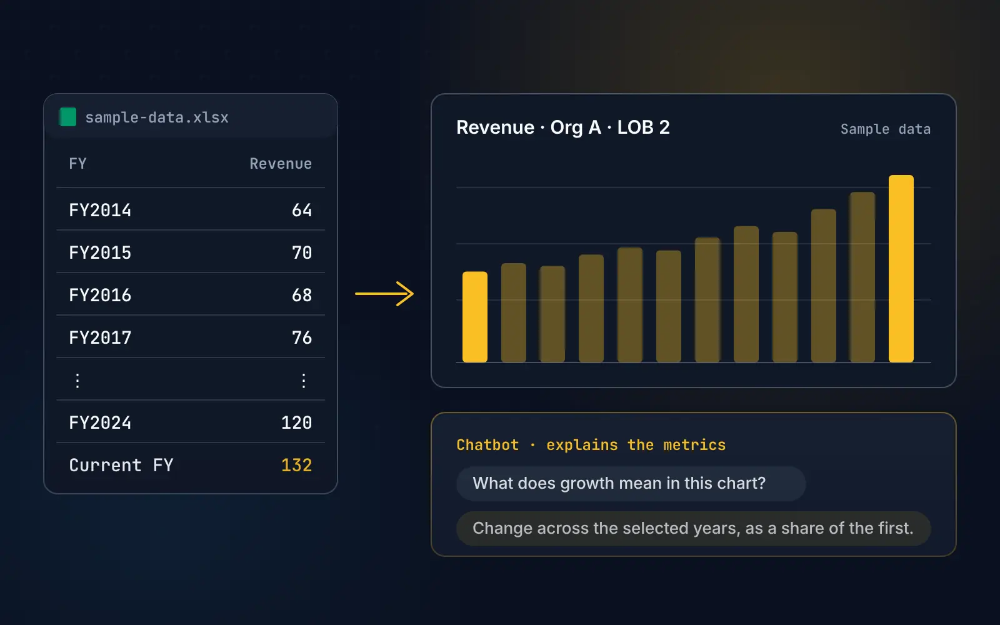

Business Sheet
Automates the manual Excel work behind organization and line-of-business reporting: meaningful charts and financial-year comparisons, from FY2014 to the current financial year, with a chatbot that explains the metrics. I built it end to end, from chart generation to the metrics chatbot.
- Analytics
- Automation
- AI / ML
- Software Development

- My contribution
- Owned the full build
- Status
- No public status
- Compares
- FY2014 to the current FY
- Categories
- Analytics · Automation · AI / ML · Software Development
The problem
Preparing and comparing information from Excel required manual work, making it cumbersome to turn the data into useful views.
Technical approach
Excel data by organization, line of business and financial year becomes charts with one action. Users customise the view with button-driven selections, and a chatbot explains the metrics behind each chart.
From spreadsheet to chart
Functional view drawn from the documented capabilities, with sample content. It is not a system architecture diagram.
- Excel dataFigures by organisation, line of business and financial year
- SelectOrganisation, line of business and financial years
- Generate chartsOne action, instead of building each view by hand
- Customise the viewButton-driven changes, such as the selections
Illustrative example · sample data, not the real application
OrganisationOrg A
| FY | Revenue |
|---|---|
| FY2020 | 88 |
| FY2021 | 96 |
| FY2022 | 92 |
| FY2023 | 108 |
| FY2024 | 120 |
| Current FY | 132 |
Chatbot · explains the metrics
What does growth mean in this chart?
It’s how much revenue changed across the years you’ve selected, as a share of the first year. For Org A · LOB 2: (132 − 88) ÷ 88 = 50% from FY2020 to the current FY.
Sample answer, from the figures in the chart
My contribution
I built Business Sheet end to end, from the manual Excel reporting it replaces to customisable charts and the chatbot that explains the metrics.
Technologies
Stack details not yet published
Technologies are listed only once confirmed.
Results and status
Users can generate and customise useful views through button-driven actions instead of repeatedly assembling them manually in Excel.
- Status
- No public status
- Metrics
- No published metrics
Walkthrough
It shows sample Excel data becoming a chart, a changed selection and a chatbot explanation of a metric.
Read the walkthrough as text
- Excel dataThe starting point: sample financial-year data in an Excel-style sheet, which used to be turned into views by hand.
- Choose what to compareAn organization, a line of business and a financial-year range are selected (sample selections).
- Generate chartsOne button turns the selected data into a chart, instead of building it manually in Excel.
- Compare across yearsThe chart compares sample revenue from FY2014 to the current FY: 64 at the start, 132 now.
- Change a selectionChanging a selection, here the first financial year, updates the chart.
- Ask about a metricThe chatbot explains a metric using the figures in the chart (sample answer).
Repository and demo
- RepositoryNot public: company project
- Live demoNot public: company project
- Illustrative walkthroughDescribed above, as text